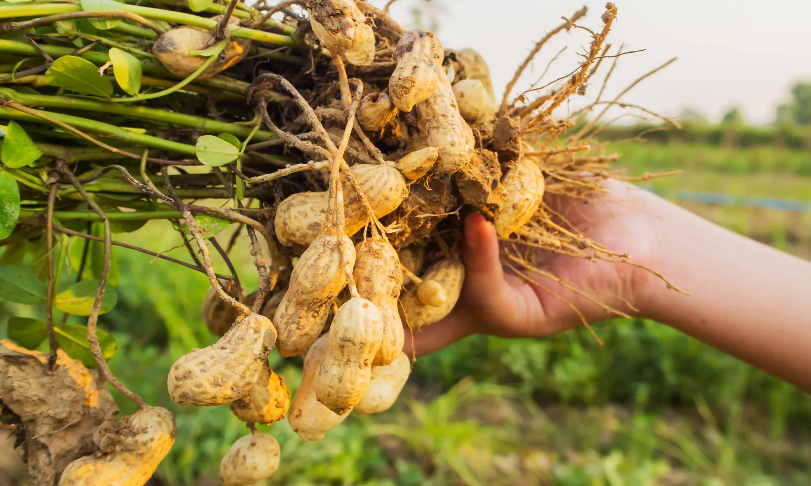
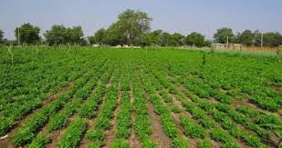
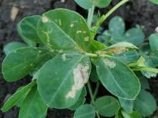

Mwongozo Kamili wa Kilimo Bora cha Karanga Kitaalamu

1. Idara ya Maandalizi ya Shamba na Udongo
Karanga ni zao linalobeba matunda yake chini ya ardhi, hivyo muundo wa udongo una mchango mkubwa sana katika kuamua kiasi cha mavuno.
Hali ya Udongo: Karanga zinahitaji udongo tifutifu unaopitisha maji kwa urahisi (sandy loam). Udongo wa mfinyanzi haufai kwa sababu unakuwa mgumu na kuzuia "propes" (mizizi ya matunda) kuingia chini ardhini.
Ulimaji wa Matuta: Inashauriwa sana kupanda karanga juu ya matuta badala ya usawa wa chini. Matuta yanalegeza udongo na kufanya karanga ziongezeke kwa ukubwa na idadi kwa urahisi zaidi.
2. Idara ya Upandaji na Vipimo vya Nafasi
Kutumia vipimo sahihi vya nafasi kunasaidia majani ya karanga kufunika ardhi mapema na kuzuia magugu yasiote, pamoja na kulinda unyevu wa udongo.
Aina ya Karanga
Nafasi Kati ya Mstari na Mstari
Nafasi Kati ya Shimo na Shimo
Kina cha Kupanda
Zinazovimba kwa Matata (Bunch type)
30 Sentimita hadi 45 cm
10 Sentimita hadi 15 cm
5 Sentimita (5 cm)
Zinazotambaa (Spreading type)
45 Sentimita hadi 60 cm
15 Sentimita hadi 20 cm
5 Sentimita (5 cm)

📊 Kikokotoo cha Pembejeo (Karanga)
📋 Ripoti ya Mahitaji
Mbegu (Zilizopukuchuliwa):0 Kilo
Mbolea ya DAP (Kupandia):0 Kilo
Mbolea ya CAN (Kukuzia/Chokaa):0 Kilo
💰 Kikokotoo cha Faida (Agribusiness)
💵 Makadirio ya Kifedha ya Karanga
Gharama za Kilimo:0 TZS
Mavuno (Magunia ya Karanga):0 Gunia
Faida Safi:0 TZS
3. Idara ya Lishe na Uwekezaji wa Mbolea
Ingawa karanga zina uwezo wa kujitengenezea Nitrojeni kutoka hewani kwa sababu ni zao la jamii ya kunde, zinahitaji madini ya Fosfari na Calcium kwa wingi [1.3].
Awamu ya Kwanza: Mbolea ya Kupandia (DAP)
Weka **kilo 50 za DAP kwa ekari moja** wakati wa kupanda ili kusaidia mizizi kukua kwa nguvu na haraka [1.3].
Awamu ya Pili: Uwekaji wa Calcium (Mbolea ya CAN au Gypsum)
Uhaba wa Calcium ardhini unasababisha karanga kutoa maganda yasiyokuwa na mbegu ndani (popoo). Weka **kilo 50 za CAN au Gypsum kwa ekari moja** wakati wa maua ili kuhakikisha karanga zote zinajaa mbegu vizuri [1.3].
4. Idara ya Mbegu: Aina za Mbegu Bora Tanzania
Kituo cha utafiti wa kilimo cha **TARI Naliendele** kimegundua mbegu bora zinazotoa mafuta mengi na zinazovumilia magonjwa:
Mnanje 2009 & Mangaka 2009: Zinafaa sana kwa maeneo yenye mvua chache, zinavumilia magonjwa ya majani, na zinatoa mazao mengi.
Kuendelea: Mbegu ya kisasa inayopendwa kwa sababu ya kutoa mbegu kubwa zenye rangi nyekundu inayopendwa sokoni.
Pwani 2017: Inastawi vizuri katika maeneo ya ukanda wa pwani na nyanda za chini.
5. Idara ya Ulinzi: Kudhibiti Magugu, Wadudu na Magonjwa
Kudhibiti Magugu
Palizi ya kwanza ifanyike wiki 2 hadi 3 baada ya kuota. *Tahadhari kuu:* Usipalilie karanga pale zinapoanza kutoa zile vishina vya matunda (propes) kuingia ardhini, kwani utakata vishina hivyo na kupunguza mavuno ghafla.
Magonjwa Makubwa (Ugonjwa wa Rosette na Sumu Kuvu)
Ugonjwa wa Rosette: Unasababishwa na wadudu mafuta (aphids) ambapo mimea inadumaa na majani yanakuwa ya manjano yaliyosongana.
Sumu Kuvu (Aflatoxin): Fangasi wanaoshambulia karanga zikiwa ghalani kutokana na unyevu. Ni sumu hatari kwa binadamu [1.3].

6. Idara ya Uvunaji na Uhifadhi
Uvunaji wa mapema au uliochelewa unapunguza ubora wa mbegu na kuongeza hatari ya fangasi.
Alama za Kukomaa: Ng'oa mmea wa jaribio; ukiona ndani ya ganda kuna rangi ya kahawia au weusi, karanga zimekomaa.
Kukausha: Kausha karanga zikiwa kwenye maganda yake juu ya maturubai kwa siku 7 hadi 14 hadi zikauke kabisa (unyevu chini ya **7%**). Usizipukuchue mpaka wakati wa kuuza au kula ili kuzilinda dhidi ya sumu kuvu [1.3].